Welcome
In this exercise we will simulate a spin-echo MR image of the brain using SimuBloch, a code developed by Fang Cao, Olivier Commowick and Christian Barillot at IRISA in Rennes.
- In your home page, open MRI simulator "SimuBloch v0.2"
- Look at the parameters of the simulator: 3 maps defining
the magnetic parameters (T1, T2 and proton density M0) in each
voxel of the brain, two MR sequence parameters (TR and TE), and a directory where the results will be stored.
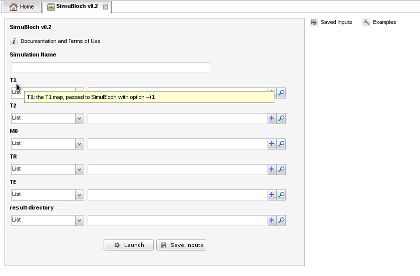
- In section "Examples" (), load one of the examples available for "SimuBloch v0.2", for instance "PD weighted" (move your mouse over the example and click the green button):
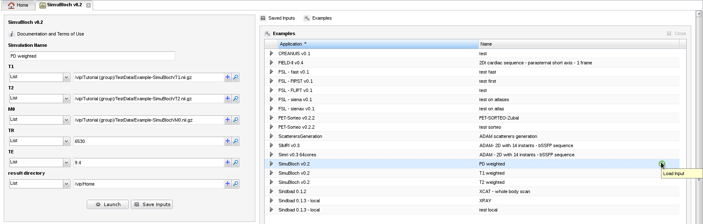
- Then click "launch" and wait until a green message appears to confirm that the simulation was launched.
- Go back to your home page, and open "Simulation Monitor". Your simulation should be in status running:
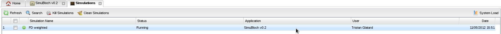
- The simulation task is created and appears in the "Jobs summary":
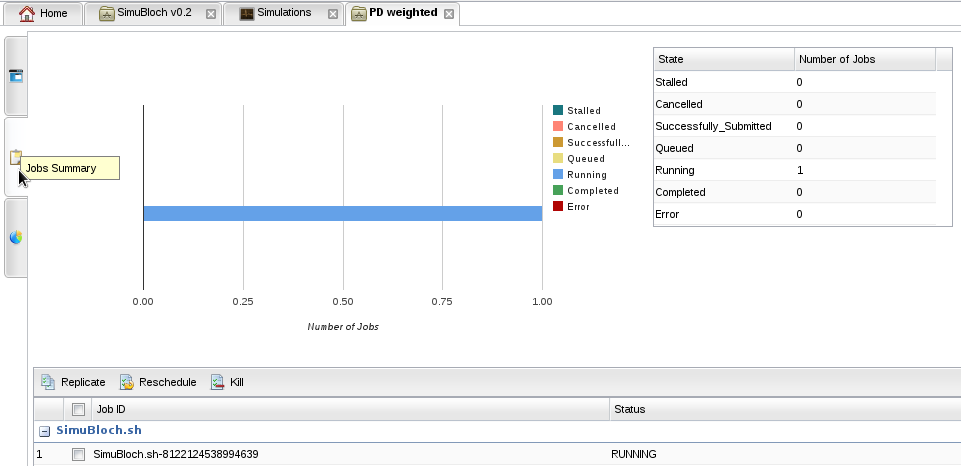
- After a few seconds, the simulation is completed, and the result image is available for download in tab "General Information". Download the result file by right-clicking on the output link:
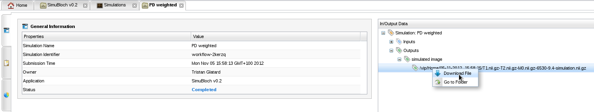
- Results can finally be downloaded on your local machine from the file transfer tool:
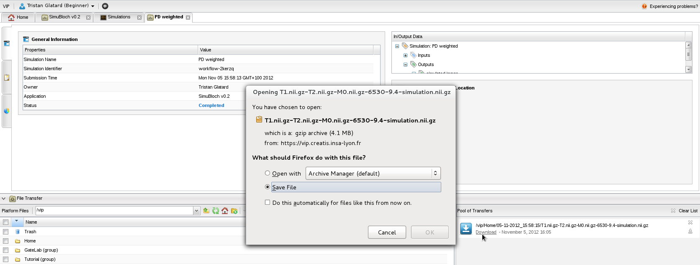
- To visualize the result, download and install VV, and open the .nii.gz file that you have just downloaded: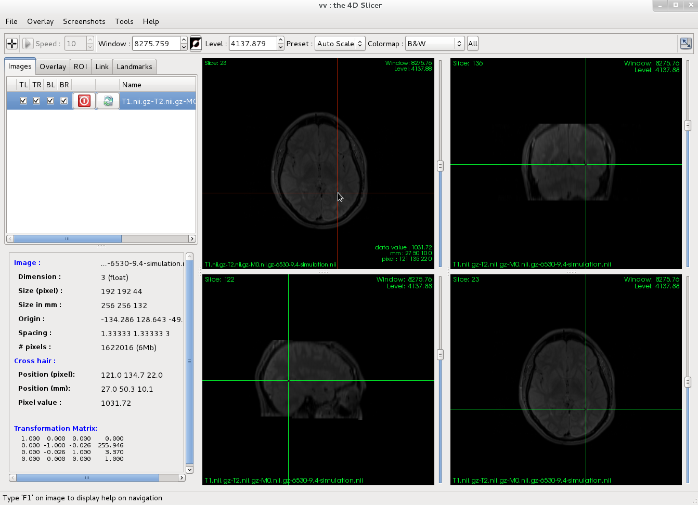
2.1 - Explore model repository
- To open the model repository, click on Models in your home page:
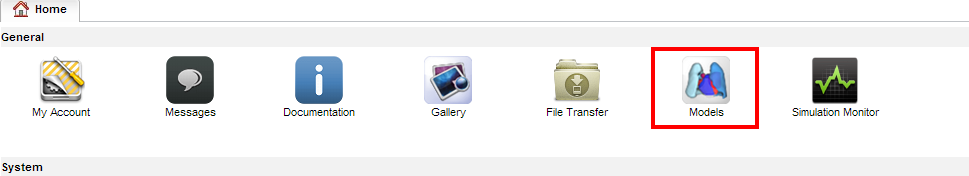
- You will see three models:
- Adam
- Extended Adam
- Zubal
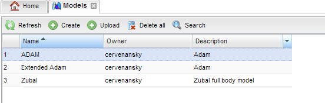
- Right click on model "adam" and select View model annotations.
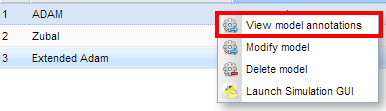
- Explore through the different layers (timepoint, instant, object layers) to look at the different objects composing a model.
The first model Adam only contains voxels and meshes objects.
- Come back to the model repository and inspect model Extended Adam. You will see physical parameters layers used for the simulations.
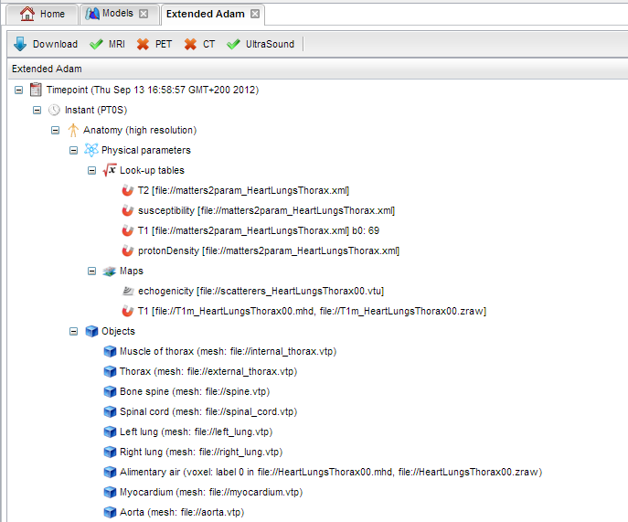
- Now, download a model by clicking the download button in the annotation panel.
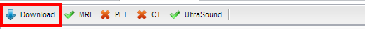
- Inspect the downloaded archive to control that voxel and meshes files are present. Note the rdf file containing semantic annotations.
- Vizualize model "adam" by right-clicking on launch simulation GUI.
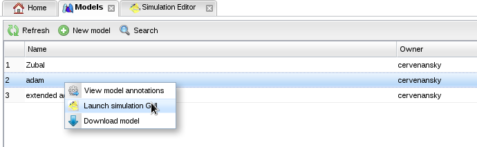
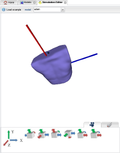
- You can also interact with the 3D model
2.2 - Import your own model
- Download one a test mesh object from here.
- In the models repository tab, click on button "New model":
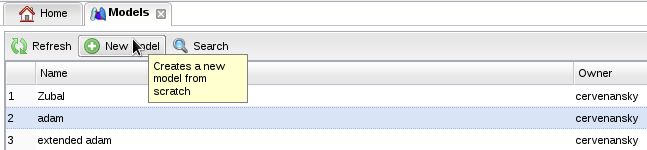.
- An empty model is created with one time-point and one instant.
The page is divided in two sections: the left panel contains the files to be added to the model.
The right panel contains the current status of your annotated model. 
- Add your test mesh object.
 .
.
- The selected file is displayed in the left panel.
You can add several files in the same way. 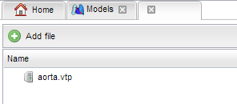
- To annotate a file in your model, drag and drop the file from the left panel to the proper instant on the right.
A dialog box appears. It allows to associate the name of an organ to your object.
- Select the right term validate it with button OK.

- Rename your model by right clicking on the right bar and select Change model name.
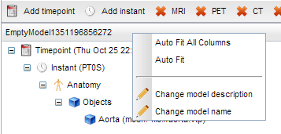
- Now, you can commit your model with the commit button. It is added in the model repository.
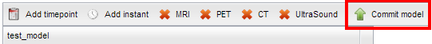 - Your model is now displayed in the model repository.